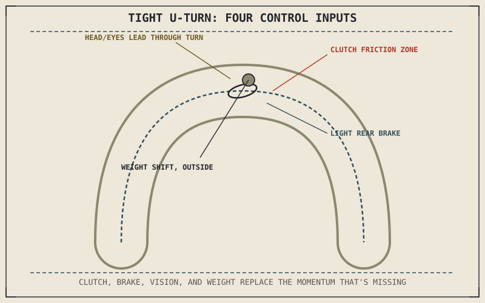

Chapter 8.10 already explained why low speed feels less stable: gyroscopic precession rate is faster when angular momentum is small, so the same disturbance produces a bigger, faster wobble than it would at highway speed. A tight, full-lock U-turn asks a rider to control a motorcycle at exactly the speed where that physics is working least in their favor — this chapter is the technique built specifically to compensate for it.
Chapter 9.7 closed by naming low-speed control and U-turns as this chapter's subject, where the momentum earlier chapters relied on is mostly absent. This chapter covers that subject.
The Friction Zone: Substituting Clutch Control for Missing Momentum
Chapter 3.2 explained the clutch's friction zone — the partial-engagement range where the plates are neither fully disengaged nor fully locked together. At low speed, riding partially in that friction zone, rather than the clutch being either fully out or fully in, lets a rider deliver small, precisely controllable amounts of drive to the rear wheel, maintaining just enough forward momentum to keep the gyroscopic effects from Chapter 8.10 working, without accelerating to a speed the tight turn radius can't accommodate. This substitutes fine clutch control for the momentum a higher-speed turn would provide naturally.
Countersteering Still Applies, Differently
Chapter 4.5 and Chapter 8.4 described countersteering as the dominant steering mechanism at real riding speed, with direct, point-the-wheel-where-you-want-to-go steering only dominating at very low speed. A slow U-turn sits close to that transition, and skilled low-speed technique typically uses direct countersteering — turning the handlebars toward the intended direction, opposite from the countersteering input used at speed — combined with a deliberate weight shift toward the outside of the turn to keep the motorcycle balanced through a full-lock turn without the speed that would otherwise stabilize it.
A tight U-turn works against the same physics that makes highway riding feel planted — low speed means low angular momentum, and low angular momentum means the gyroscopic effects from Chapter 8.10 are barely helping at all, which is exactly why clutch control and deliberate weighting have to do more of the work.

A rider performing a tight U-turn shown using partial clutch engagement in the friction zone, rear brake for smooth deceleration control, a wide head turn looking through the turn, and body weight shifted opposite the motorcycle's lean.
Rear Brake for Smoothness, Vision for Accuracy
Light, steady rear brake pressure, applied alongside friction-zone clutch control, gives a rider a second fine-control input for managing speed through a slow turn without the abrupt on-off feel a rear-wheel-only throttle adjustment would produce — dragging the rear brake gently while feeding in just enough clutch engagement to keep moving is a common technique for exactly this reason. Chapter 9.5's vision principle applies here too, arguably more critically: looking through the full turn toward the exit, with the head turned well before the handlebars follow, keeps the line accurate through a maneuver where there's very little margin for correction if the bike drifts off the intended tight radius.
A Common Misconception, Cleared Up Early
It's a common instinct to try to balance a slow-speed turn primarily by moving the handlebars back and forth, the way a stationary bike might be walked around. Chapter 8.10 already showed that low speed reduces gyroscopic stability but doesn't eliminate the same countersteering-based lean mechanism Chapter 4.5 and Chapter 8.4 described — over-correcting with the handlebars tends to fight that mechanism rather than use it, while smooth clutch, brake, and weight control, combined with appropriately light steering input, works with the reduced but still-present physics rather than against it.
Where This Leads
Braking, cornering, body position, and low-speed control together cover how a rider handles a motorcycle on an open road or in a controlled maneuvering space. The next several chapters turn to specific riding environments — traffic, sustained highway speed, and reduced-grip conditions — where these same techniques have to adapt to circumstances outside the rider's full control. Chapter 9.9 turns to riding in traffic first.
Key Concepts to Remember
- Riding in the clutch's friction zone substitutes fine, controllable drive for the momentum a higher-speed turn would provide naturally.
- Slow, full-lock turns typically use direct countersteering and a deliberate outside weight shift, compensating for the speed that would otherwise stabilize the bike.
- Light rear brake combined with friction-zone clutch control gives smoother speed management than throttle alone, while vision through the full turn keeps the line accurate.
Cross-References
| ← Ch. 8.10 | Explained why low speed reduces gyroscopic stability through faster precession rate; this chapter builds specific technique to compensate for that reduced stability. |
| ← Ch. 3.2 | Explained the clutch's friction zone; this chapter uses that partial-engagement range as the primary control input for slow maneuvering. |
| ← Ch. 4.5 | Established the low-speed exception where direct steering dominates over countersteering; this chapter applies that exception to full-lock turns. |
| → Ch. 9.9 | Covers riding in traffic, applying this part's techniques to positioning and visibility in a shared environment. |